Searching the Database¶
You can search and explore the database with or without a user account — see Accessing the Site.
Overview¶
The CCP-NC Database provides several complementary methods for discovering computational NMR records. Depending on the information already available to you, searches can be performed using structured metadata filters, the global search bar or the interactive periodic table.
Many searchable fields are accessible using more than one search tool. Throughout this guide, the recommended workflow for each search field is explained together with worked examples, helping you choose the most effective search method for your particular task.
To get to the search workspace from the landing page, click
Explore → CCP-NC NMR APP
to reach the specially customised NMR Crystallography dashboard.
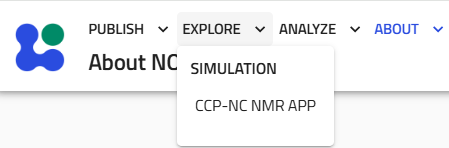
Understanding the Search Interface¶
The search workspace is organised into four main components:
- Search filter panel, used for filtering structured metadata and numerical ranges.
- Global search bar, used for constructing flexible metadata queries through the NOMAD search interface.
- Interactive periodic table, used for filtering records according to their elemental composition.
- Search results table, which displays the records matching the current search criteria.
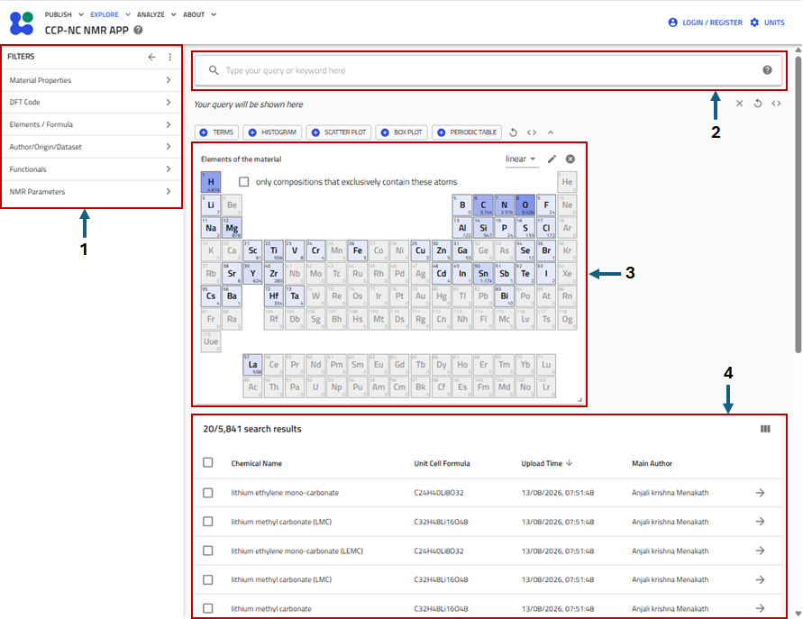
These components work together and can be used independently or in combination to progressively narrow your search results.
About the Search Tools¶
The CCP-NC Database offers multiple ways to search the same underlying metadata, allowing users to choose the approach best suited to the information they already have.
The search filter panels and interactive periodic table provide intuitive graphical interfaces for filtering records and generally require little explanation. Worked examples demonstrating these tools are included throughout the relevant sections of this guide.
The global search bar provides greater flexibility by allowing searches to be constructed directly from the metadata stored within each database record. Although the exact search differs depending on the field being queried, the general workflow remains consistent:
- Begin typing the name of the metadata field you wish to search.
- Select the appropriate field from the autocomplete suggestions.
- After selecting the field, enter an equals sign (
=) followed by the value you wish to search for. Where available, the search bar will provide autocomplete suggestions for matching values. - Choose the appropriate search type (for example, Equality or Free-text, where available).
- Review the matching records returned by the search.
The precise sequence of selections and available search options varies slightly between metadata fields. Rather than attempting to describe every possible variation here, the following sections provide worked examples for each searchable field, demonstrating the complete search workflow together with the recommended search method.
Search Results Table¶
The search results table displays all records matching the current search criteria.
Each row represents an individual computational NMR record and provides a summary of its metadata. By default, the staging deployment displays the following columns:
- Chemical Name
- Unit Cell Formula
- Upload Time
- Main Author
These columns were selected to provide a concise overview of each record while keeping the results table easy to scan.
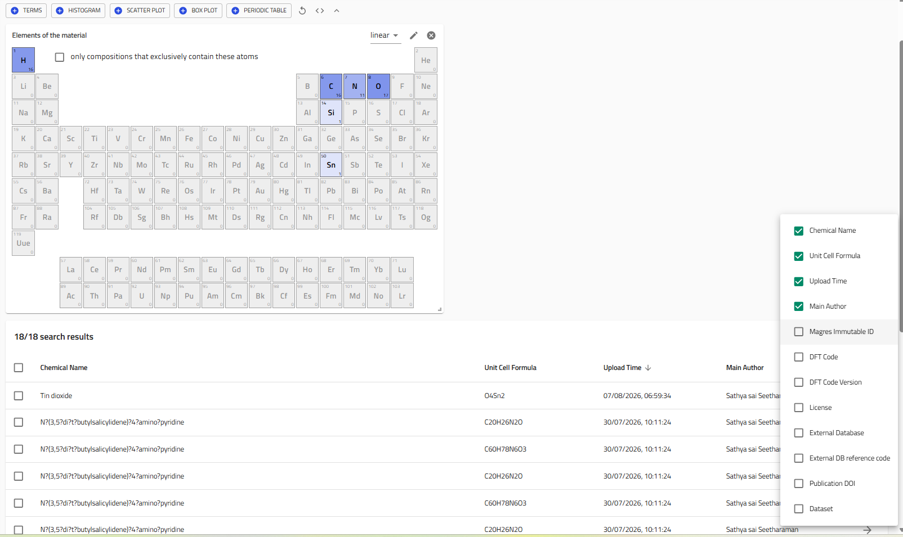
Customising Displayed Columns¶
The displayed columns can be customised to show additional metadata relevant to your search.
Select the column configuration button () on the top right of the results table to open the list of available column choices.
Tick or untick individual checkboxes to control which metadata fields are displayed. Changes are applied immediately without needing to repeat the search.
The staging deployment currently supports the following optional columns:
- Magres Immutable ID (legacy records only)
- DFT Code
- DFT Code Version
- Data Distribution License
- External Database
- External Database Reference Code
- Publication DOI
- Dataset
Tailor the results table to your workflow
If you frequently search using a particular metadata field, consider enabling the corresponding column. This allows matching values to be reviewed directly from the search results without opening every individual record.
For example:
- Enable DFT Code and DFT Code Version when comparing calculations performed using different electronic structure codes.
- Enable External Database and External Database Reference Code when comparing CCP-NC records with entries in external crystallographic databases.
Sorting Results¶
Some columns support sorting.
Where available, cicking the column heading sorts the search results in ascending or descending order. The current sort direction is indicated by the arrow displayed beside the column name.
This can be particularly useful when reviewing recently uploaded records by sorting the Upload Time column, for example, as seen in the figure above.
Staging deployment
The available columns and sorting options may evolve as additional metadata fields and search capabilities are introduced in future releases of the CCP-NC Database.
Search Fields¶
The table below organises every single metadata field by which you can filter the database records. The second and third columns show whether the field is searchable via the filter panel menu on the screen left or the global search bar at the top of the screen, using tick marks. The fourth column shows the most recommended method to search the particular field. The subsequent sections contain worked example screenshots for each field, which you can refer to independently.
| Search Field | Filter Panel | Search Bar | Recommended Method | Notes |
|---|---|---|---|---|
| Material Name | ✓ | ✓ | Filter panel for exact names; search bar for partial names | Free-text supported |
| DFT Code | ✓ | ✓ | Equality | Filter panel recommended |
| Program Version | ✓ | ✓ | Equality | Exact version |
| Chemical Formula | ✓ | ✓ | Equality | Avoid free-text for short formulae |
| Elements | ✓ | ✓ | Filter panel / Periodic Table | Composition search |
| Author | ✓ | ✓ | Equality | Filter panel preferred |
| Immutable ID | ✓ | ✓ | Equality | Seven-digit identifier |
| External Database | ✓ | ✓ | Equality | Lowercase names |
| External Database Reference Code | ✓ | ✓ | Depends | REFCODE behaviour differs |
| Publication DOI | ✓ | ✓ | Equality | Free-text for DOI fragments |
| XC Functional | ✓ | ✓ | Equality | Avoid substring matches |
| Magnetic Shielding | ✓ | Limited | Filter panel | Histogram search |
| Electric Field Gradient (Vzz) | ✓ | Limited | Filter panel | Histogram search |
Searching - Worked Examples¶
Material Name¶
Material names provide one of the simplest ways of locating records within the CCP-NC Database. Searches may be performed using either the Material Properties filter panel or the Global Search Bar, depending on whether the complete material name or only part of the name is known.
Material names are stored exactly as supplied by the dataset author. Consequently, IUPAC names, common names and author-specific naming conventions are all searchable.
Search using the Filter Panel
The Material Properties filter is located at the top of the search filter panel. There is no search text box in this filter menu for seraching material properties. The material list is ordered by the frequency with which each material occurs in the database, with the most common entries appearing first. Use checkboxes for quickly filtering materials by name. Users may click SHOW MORE to further expand the list and SHOW LESS later to contract it.
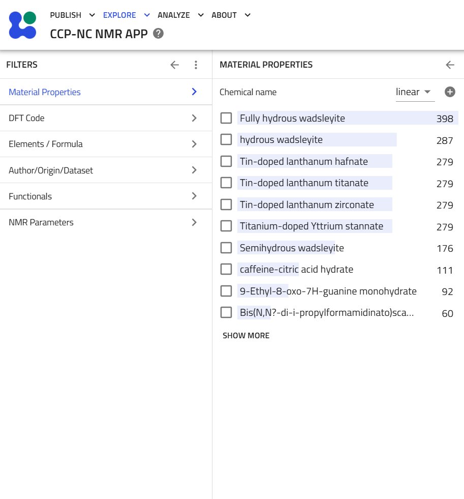
Search using the Global Search Bar
Begin typing chemical name in the Global Search Bar and select the metadata field data.ccpnc_metadata.material_properties.chemical_name from the autocomplete suggestions.
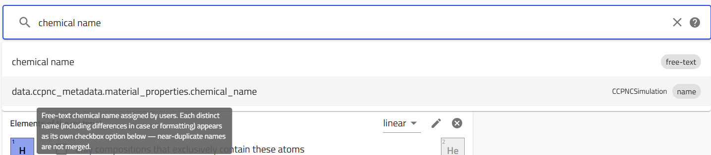
data.ccpnc_metadata.material_properties.chemical_name field from the autocomplete suggestions after typing "chemical name".After selecting the field, enter an equals sign (=) followed by the search term.
If only part of the material name is known, select Free-text search. Free-text searches are particularly useful when searching for common fragments of long IUPAC names and materials with common names.
For example, searching for:
methyl
returns records containing terms such as:
- methyl
- dimethyl
- methylphenyl
Wildcard searches may also be used where appropriate.
For example,
methyl*
restricts matches to occurrences beginning with methyl, although punctuation used within IUPAC names means wildcard behaviour should be interpreted with care.
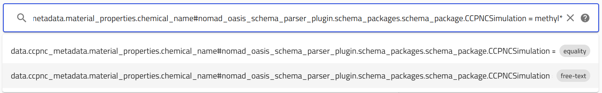
methyl*, restricting matches to names beginning with "methyl".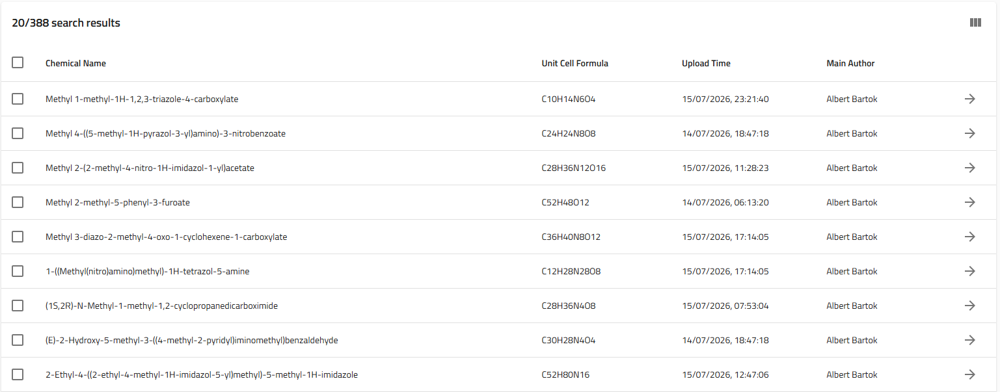
methyl* search.Where the exact material name is known, select Equality search and enter the complete string following the = sign. For example, an entry such as:
2-(((2,3-Dihydroxypropyl)iminio)methyl)-4-nitrophenolate
must be entered substantially as stored in the database.
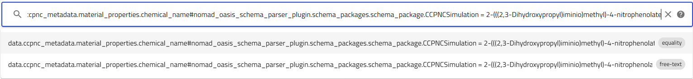
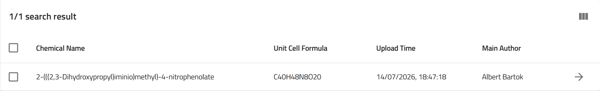
Best Practice
Tip
Use the Filter Panel when the material name is known and found with high frequency in the database.
Use the Global Search Bar when only part of the material name is available or when searching long systematic names.
Program name (DFT Code)¶
The CCP-NC Database allows records to be filtered according to the electronic structure code used to generate the calculation.
Search using the Filter Panel
The Filter Panel is the recommended method for filtering records by DFT code.
The program name filter contains all electronic structure codes currently represented within the database and can be found under the DFT Code filter menu. Select the desired code using the available checkboxes.
Results may be refined further by selecting one or more program versions. Program versions are ordered according to their frequency within the database rather than numerical order.
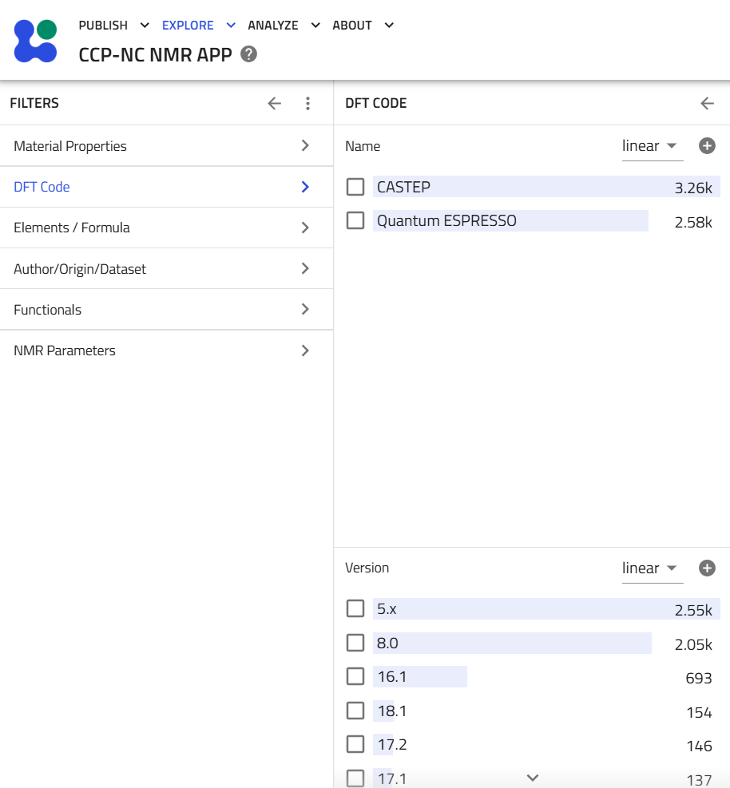
Using the Global Search Bar
Begin typing program and select the metadata field results.method.simulation.program_name from the autocomplete suggestions.
After selecting the field, enter the = sign followed by the required program name. Choose Equality search. Equality search is recommended because program names represent structured metadata. Remember that the equality search is case-sensitive, it is recommended to choose the entry suggested by the autocomplete feature.
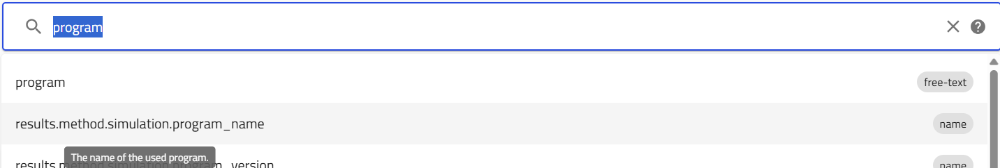
results.method.simulation.program_name after typing "program".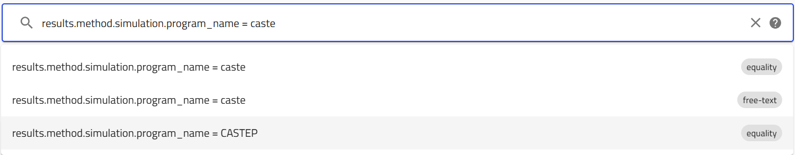
CASTEP.DFT Code Version¶
Program version searches allow calculations to be restricted to a particular release of an electronic structure code.
Search using the Filter Panel
The Filter Panel is recommended for filtering records by DFT code version, just like in teh case of DFT code name filter.
Program versions list is listed beneath the Program Name list under the main DFT Code filter menu. Select one or more versions using the available checkboxes. Multiple versions may be selected simultaneously to search across a version range.
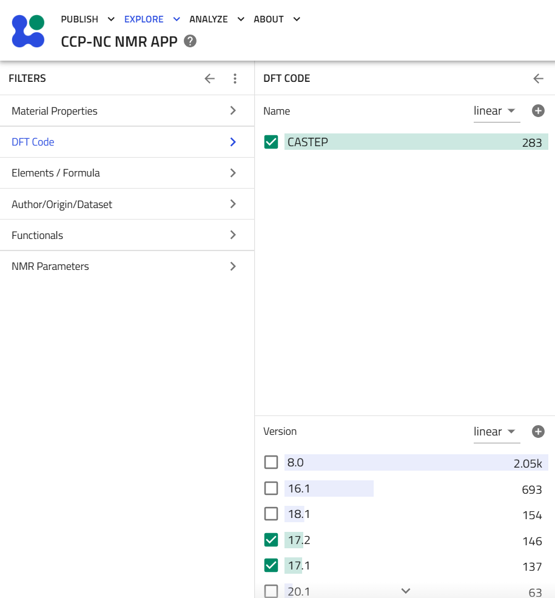
Using the Global Search Bar
Begin typing version and select the metadata field results.method.simulation.program_version from the autocomplete suggestions.
After selecting the field, enter the = sign followed by the required program version number. Autocomplete suggestions display the program versions currently represented within the database, that are closest to the typed search field. Select the required value using Equality search.
Note: There is no direct method to implement a range filter on the program versions. Therefore, the above step has to be repeated as many times as needed to apply as many version number filters.
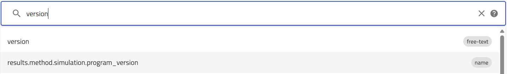
results.method.simulation.program_version after typing "version".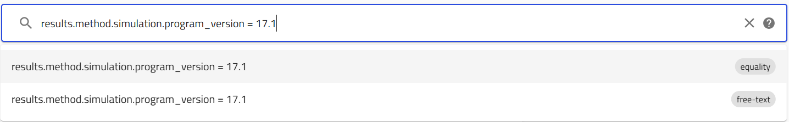
17.1.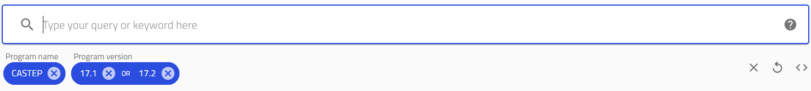
Chemical Formula¶
Chemical formulae may be searched using either the Filter Panel or the Global Search Bar. The database supports formula searches using standard crystallographic conventions.
Using the interactive periodic table
The periodic table in the main data exploration page can be used for quickly filtering records that contain only specific elements, before the targeted formula based search.
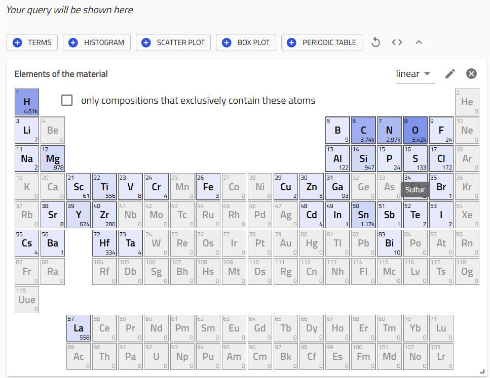
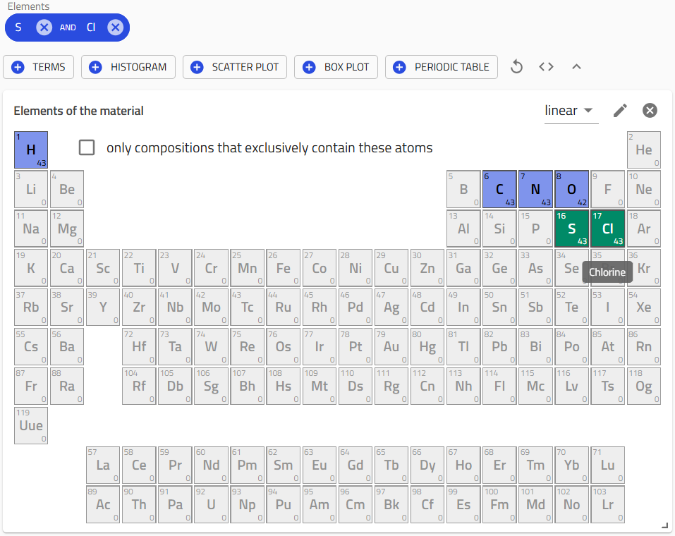
Using the Filter Panel
The filter panel offers an Elements/Formula menu where a user can search for chemical formulae in the IUPAC or Hill conventions using the search text box provided. These search fields are case-sensitive and require the search query to be exact matches. But, these search text boxes contain auto-completion suggestion feature that will offer you helpful suggestions as you start typing in the formula.
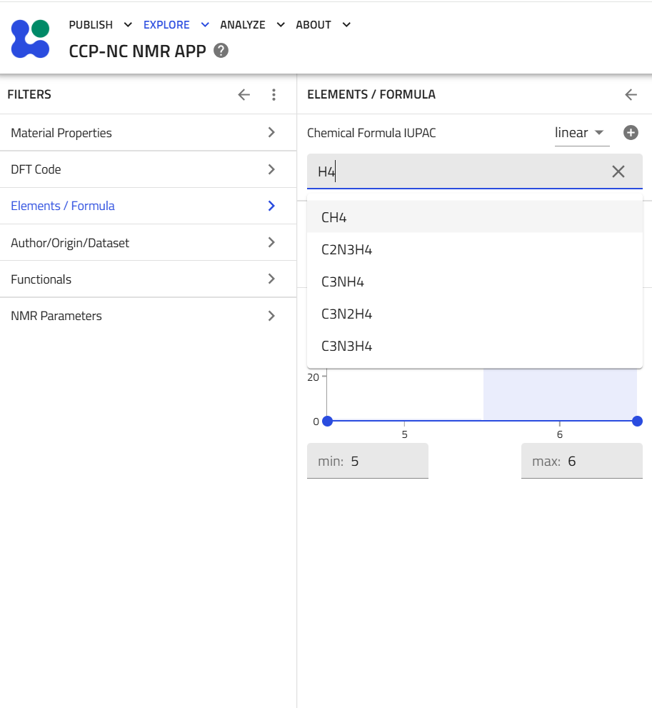
H4 into the Chemical Formula IUPAC box brings up matching autocomplete suggestions; the N elements histogram below is set to a min/max range of 5–6.The filter panel also offers a histogram to further filter records by the number of constituent elements in the target material. Drag the mouse to control the sliders on the histogram directly or enter values for minimum and maximum number of elements in the corresponding text boxes below the histogram. Note: The min and max values can be equal if only a single search value is preferred. Try different combinations of values to get familiar.
Using the Global Search Bar
The search bar offers a slightly broader search functionality for formula than the filter menu. In the search bar, start typing formula which by default brings up 4 conventions - Hill, IUPAC, Reduced, Anonymous - in which each material is represented on the database.
Select the preferred formula field, as per requirement. Note: Scroll down the auto-suggestion menu to choose from data.model_system.chemical_formula.*,as this aligns with a newer NOMAD data model for storing formula information. Then, follow the field name with the = sign and your search string. Equality search works best for chemical formulae, so take care to type in the complete string to perform an exact string match.
For example, here we show search performed by choosing IUPAC convention and Equality search.
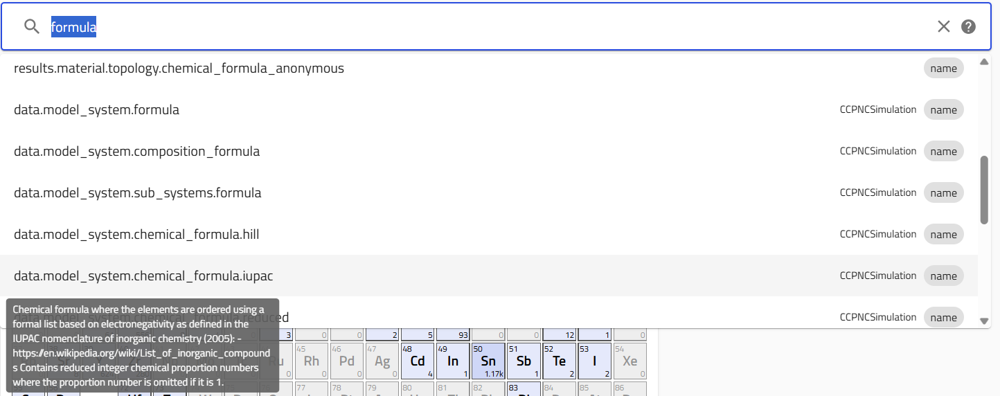
data.model_system.chemical_formula.iupac (tagged CCPNCSimulation) after typing "formula".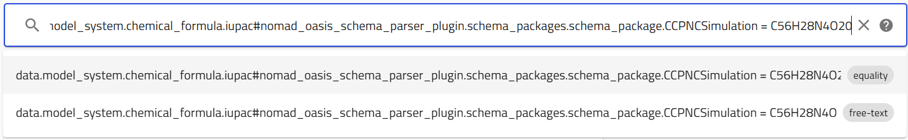
Search by Elements¶
Using the Interactive Periodic Table
The periodic table provides a graphical, straightforward method for filtering records according to elemental composition. Only elements currently represented within the filtered dataset are displayed as active (blue tiles). Darker the blue tiles, the higher the frequency of occurrence of that element in the overall/filtered dataset. Ele,ents that don't occur in any records are greyed out.
Selecting an element immediately restricts the search results to records containing that element. Following each selection, elements that are no longer present within the filtered records are greyed out automatically. Additional elements may then be selected to progressively narrow the search.
For example:
- Select Sulphur.
- Review the updated periodic table.
- Select Chlorine to restrict the results further.
Best Practice
Tip
The Filter Panel and Global Search Bar are generally more appropriate when element searches need to be combined with additional metadata filters.
Author¶
Author searches allow records to be located according to the primary author associated with a computational dataset. Searches may be performed using either the Author filter within the search panel or the Global Search Bar.
Using the Filter Panel
The Author / Origin / Dataset filter contains a searchable list of all authors represented within the database. The filter panel is the fastest and most recommended way to search by author metadata field.
Begin typing the author's name into the search box or select the required author directly from the list of available values. The search text box provides autocomplete suggestion as the name is being typed to help choose the author names faster.
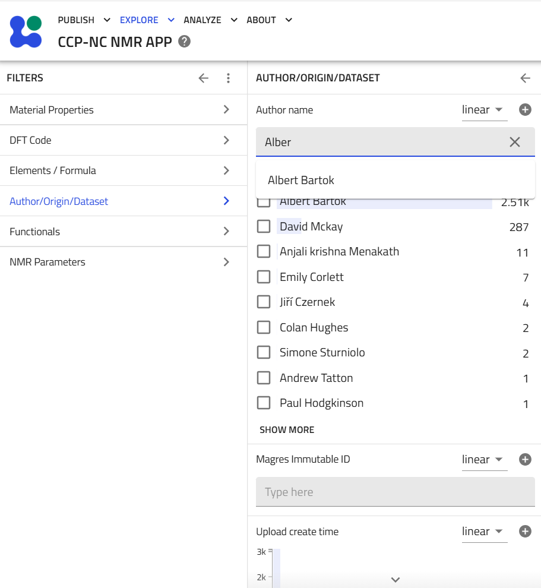
As with other filter lists, authors are ordered according to the number of records associated with each author. The most frequently occurring author names in the records float to the top of the list and the author names are listed in decreasing frequency of occurrence from the top.
Using the Global Search Bar
Begin typing author in the global search bar and select the authors.name metadata field from the autocomplete suggestions. After selecting the field, enter an equals sign (=) followed by the author's name. Equality search is strongly recommended. As the author name is being typed, the autocomplete suggestion will offer author name suggestions that most closely match the search string. Click on the option that matches the search criterion and offers Equality search.
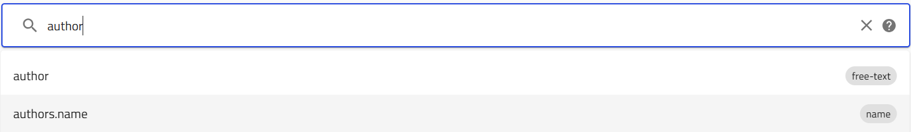
authors.name after typing "author".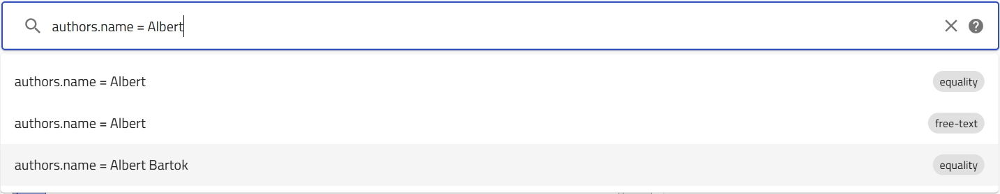
Best Practice
Tip
Whenever possible, use the Author filter panel or an Equality search in the Global Search Bar.
Immutable ID (Magres unique identifier)¶
Each legacy CCP-NC record is assigned a unique Immutable ID (historically referred to as the MAGRES ID). This identifier provides one of the most precise methods for locating individual database records.
Using the Filter Panel
Immutable IDs are listed within the Author / Origin / Dataset filter on the filter panel. The identifier must be entered as a seven-digit number with leading zeros.
For example, 0002526 rather than 2526
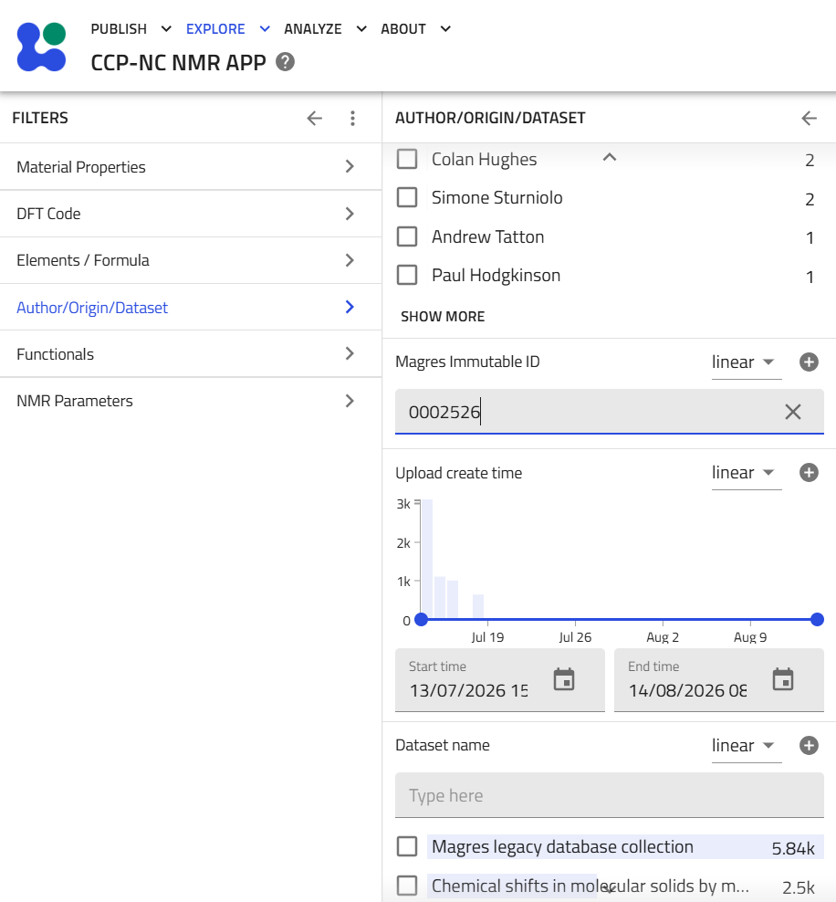
0002526 entered.Using the Global Search Bar
Begin typing immutable on the global search bar and select the data.ccpnc_metadata.ccpnc_record.immutable_id metadata field.
After selecting the field, enter an equals sign (=) followed by the seven-digit identifier. Choose Equality search.
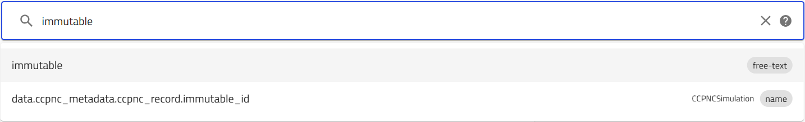
data.ccpnc_metadata.ccpnc_record.immutable_id after typing "immutable".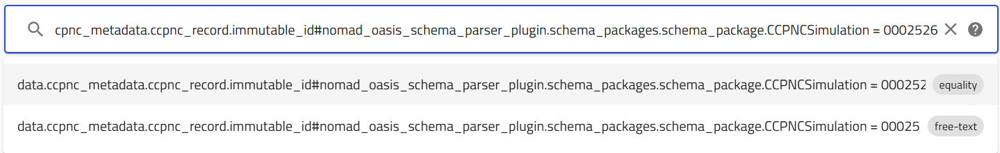
0002526.Legacy Record Versioning
Warning
Historically, the legacy CCP-NC Database supported record versioning. Where multiple versions of the same record were deposited, each version shared the same Immutable ID.
During migration to the CCP-NC Database, these versions became separate records while retaining their original identifier. As a result, a small number of Immutable ID searches may return more than one record. This behaviour is expected and reflects the historical versioning system rather than duplicate identifiers.
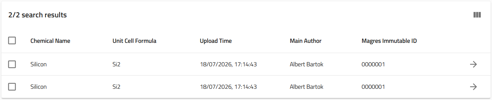
An Immutable ID search returning two records — both "Silicon", Si2 — reflecting two versions of the same legacy record.Best Practice
Warning
Always search using the complete seven-digit Immutable ID.
External Database¶
Many CCP-NC records contain references to crystal structures in external crystallographic databases, where the authors have made such referencing metadata available. Filtering by external database references allows shortlisting by a reference crystal structure faster.
Using the Filter Panel
The External Database filter is located within the Author / Origin / Dataset section.
Select the required database from the available list by checking the appropriate checkboxes. This should list every single entry in the database that has a reference to the selected database.
To filter further, one can enter the database reference code from the external database, if known. This search field, by default, performs an Equality search (exact-match only).
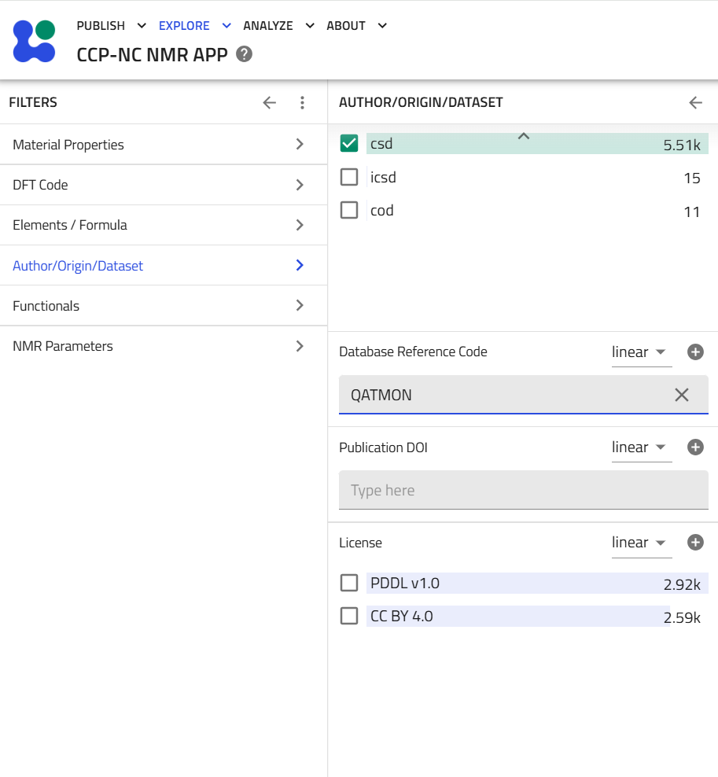
QATMON entered in the Database Reference Code box.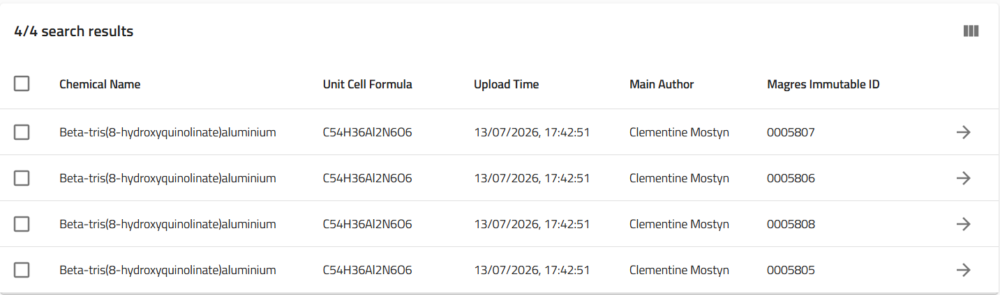
QATMON.Using the Global Search Bar
Begin typing external database in the global search bar and select the data.ccpnc_metadata.external_database_reference.external_database_name metadata field.
After selecting the field, type the = sign and enter the database name using lowercase notation.
Examples include:
csdicsdcod
Choose Equality search. Although Free-text search is available, Equality searches provide more reliable results as a partial search for csd with returns results containing both csd and icsd.
To search also by an external database reference code, start typing external database in the global search bar and select the data.ccpnc_metadata.external_database_reference.external_database_reference_code metadata field from the drop-down menu. Follow it by typing an = sign and the exact reference code, choosing Equality or Free-textsearch. Please see screenshots and the Best Practice section below for how choosing either affects the search results.
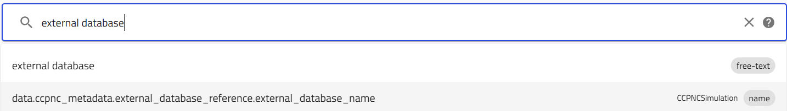
data.ccpnc_metadata.external_database_reference.external_database_name after typing "external database".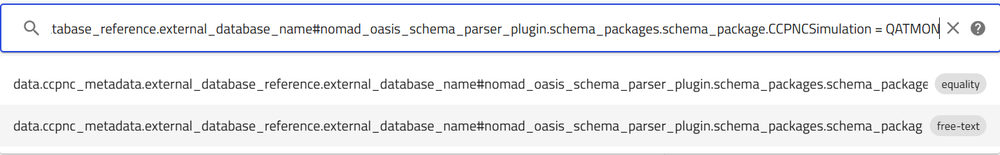
QATMON and choosing the free-text option.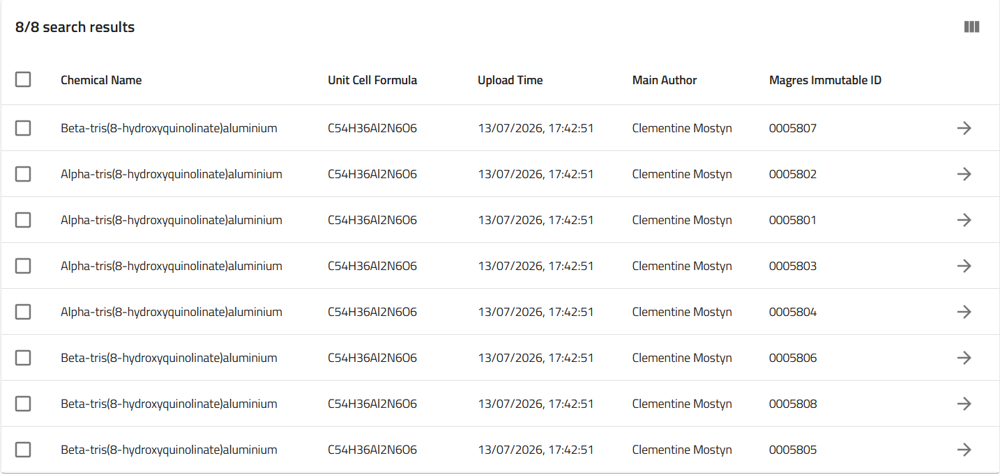
Best Practice
Tip
-
CSD REFCODEs may be searched using either Equality or Free-text searches.
For example,
QATMONAn Equality search returns records associated directly with the base REFCODE.
A Free-text search additionally returns related identifiers such as:
- QATMON01
- QATMON02
and other structural variants derived from the same parent entry.
-
ICSD reference numbers are unique numerical identifiers.
For these identifiers, Equality and Free-text searches generally return the same results.
Publication DOI¶
Publication DOI searches allow records associated with a particular scientific publication to be located quickly.
Using the Filter Panel
Locate the Publication DOI filter within the Author / Origin / Dataset section. Enter the exact DOI to search and filter, as this search box offers only Equality search.
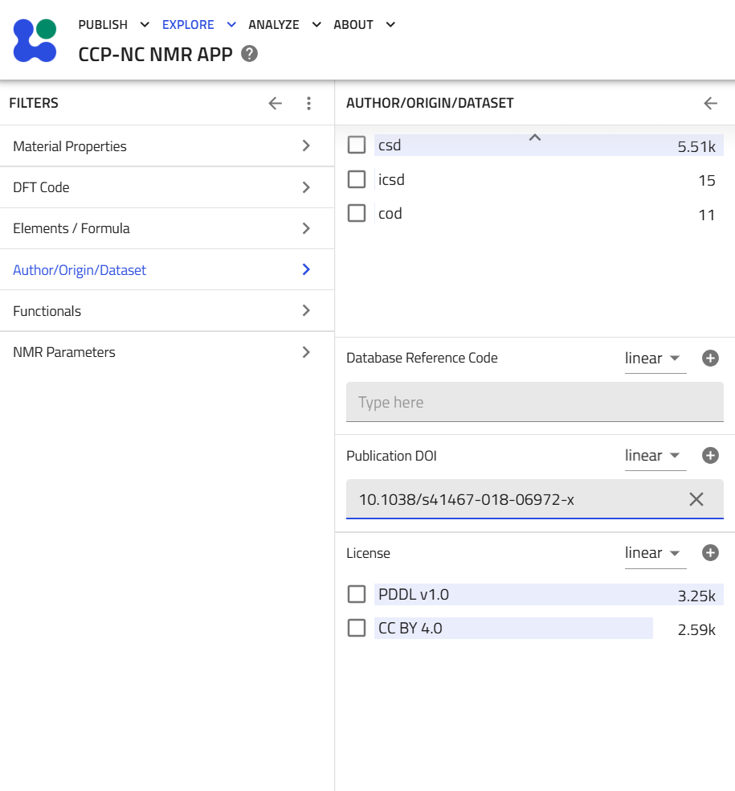
Using the Global Search Bar
Begin typing doi in the search bar and select the data.ccpnc_metadata.publication_record.doi metadata field.
After selecting the field, enter an equals sign (=) followed by the DOI. For example, for search by partial DOI, one can enter 10.1038 and choose Free-text option from the drop-down menu OR, if the exact DOI is known, such as 10.1038/s41557-019-0304-z, this search string can be entered and Equality option can be selected from the drop-down menu for a more refined search.
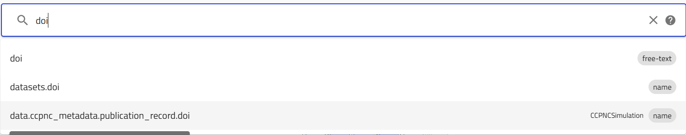
data.ccpnc_metadata.publication_record.doi after typing "doi".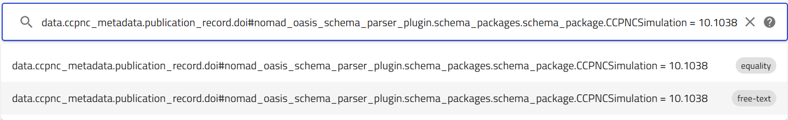
10.1038, searched with the free-text option.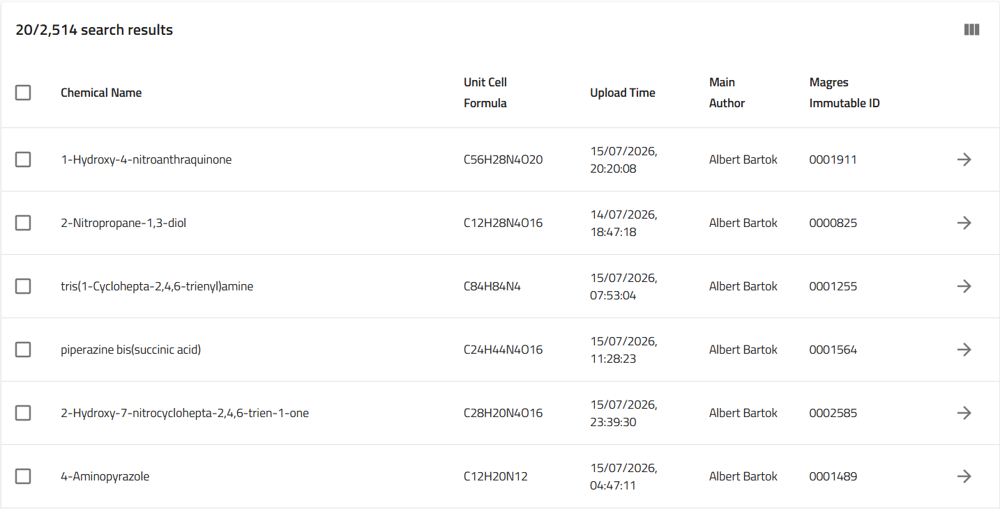
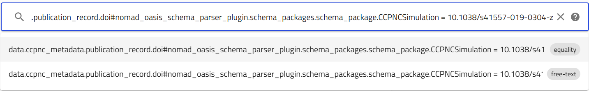
10.1038/s41557-019-0304-z, searched with the equality option.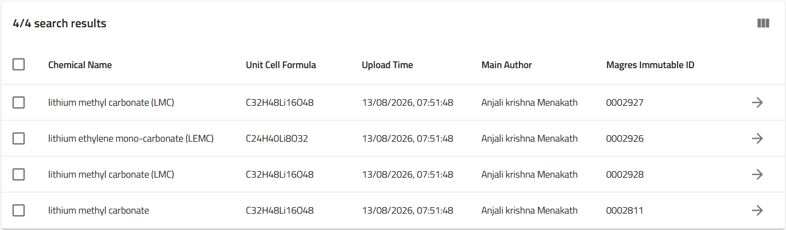
Best Practice
Tip
Use Equality search whenever the complete DOI is available.
Reserve Free-text searches for situations where only part of the DOI is known.
Exchange-Correlation Functional¶
The CCP-NC Database allows records to be filtered according to the exchange-correlation (XC) functional used during the electronic structure calculation. This can be particularly useful when comparing computational results generated using different levels of density functional theory.
Using the Filter Panel
The Functionals filter contains the exchange-correlation functionals represented within the current search results.
The staging database currently includes functionals from several families, including:
- Local Density Approximation (LDA)
- Generalised Gradient Approximation (GGA)
- Hybrid GGA
- Meta-GGA
- Hartree-Fock (HF)
Examples currently represented in the database include:
- LDA
- PBE
- PW91
- RPBE
- WC
- PBESOL
- BLYP
- B3LYP
- PBE0
- HSE03
- HSE06
- RSCAN
- HF
Select one or more functionals using the available checkboxes.
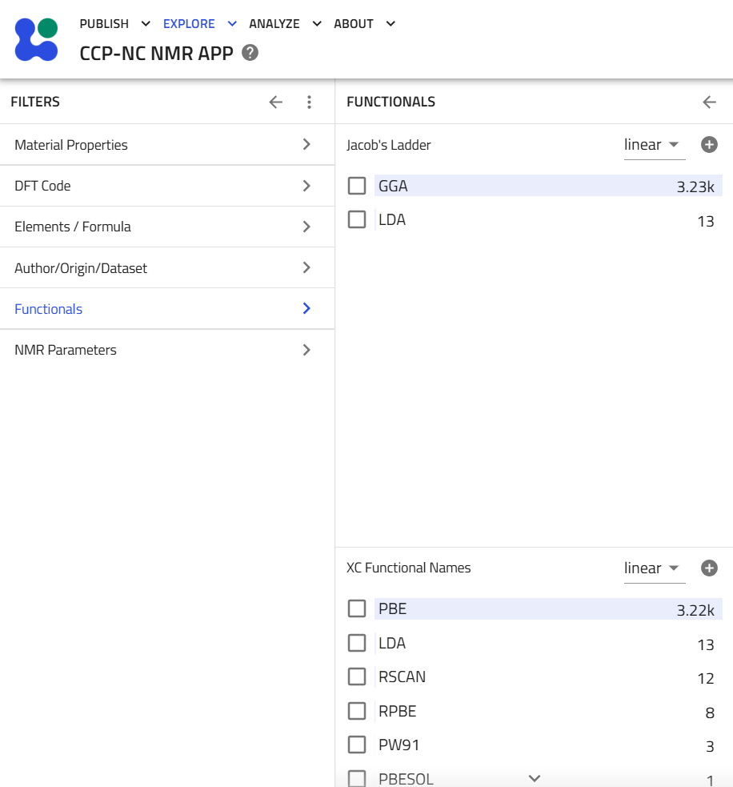
Using the Global Search Bar
To filter first by a functional family, begin typing jacob in the global search bar and data.model_method.jacobs_ladder to select the metadata field from the autocomplete suggestions.
After selecting the field, enter an equals sign (=) followed by the functional family name. It is recommended first to search using one of the listed families in Using the Filter Panel sub-section above and choosing Equality search from the dropdown menu.
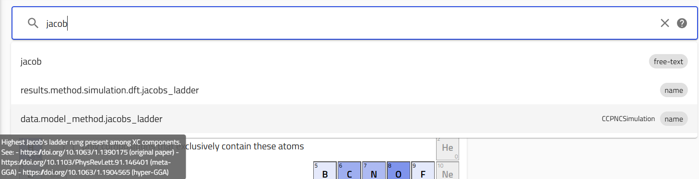
data.model_method.jacobs_ladder after typing "jacob".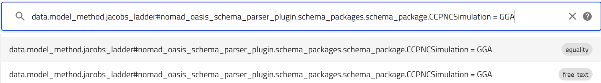
GGA.To further filter by a functional name, begin typing functional in the global search bar and choosing data.model_method.xc.functional_key metadata field from the dropdown menu. As before, type in an = sign followed by the functional name to search.
Choose Equality search. Although Free-text search is available, Equality searches are recommended because several functional names contain common substrings.
For example,
- PBE
- RPBE
- PBESOL
share similar text and may produce unintended matches when using Free-text searches.
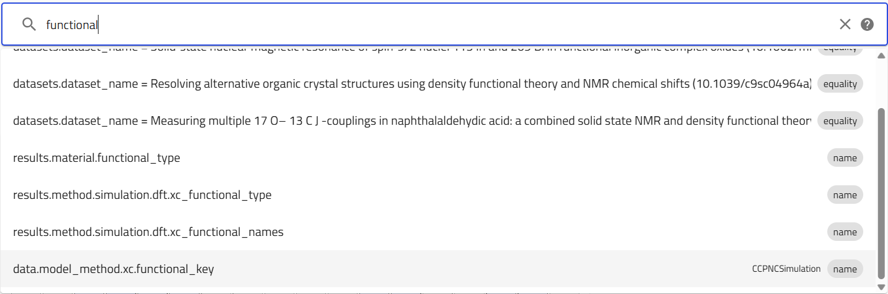
data.model_method.xc.functional_key (tagged CCPNCSimulation) after typing "functional".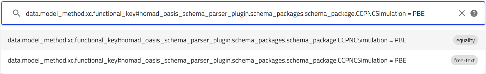
PBE.Best Practice
Tip
Equality search should always be used when searching by exchange-correlation functional.
Site-resolved Magnetic Shielding Isotropy (σiso)¶
One of the principal strengths of the CCP-NC Database is the ability to search computational NMR data directly using calculated site-resolved magnetic shielding values.
Magnetic shielding searches are currently available for the most commonly studied NMR-active elements represented within the database.
Using the Filter Panel
The filter panel is the only recommended search method for filtering records by NMR parameters. Within the NMR Parameters section, select Magnetic Shielding (ppm) and then the element of interest.
The staging deployment currently supports magnetic shielding searches for the common NMR elements listed within the interface. Each element contains an interactive histogram showing the distribution of calculated shielding values across the database.
Adjust the histogram sliders to define the desired search range. Only records containing site-resolved magnetic shielding values within the selected range are returned.
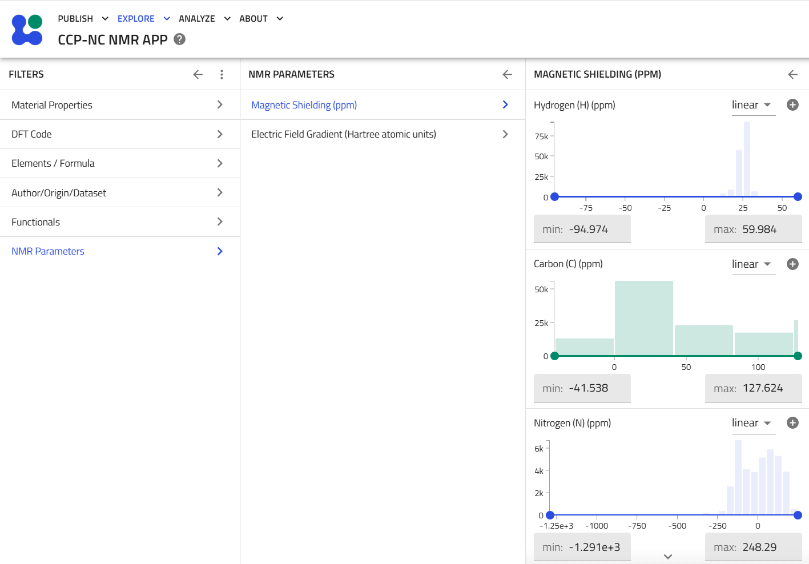
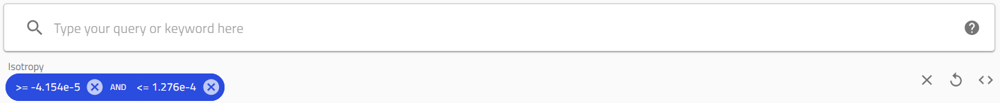
Site-resolved Electric Field Gradient (Vzz)¶
The CCP-NC Database also supports searching using calculated site-resolved electric field gradient (EFG) V_zz component.
As with magnetic shielding, searches are performed using numerical ranges on the histogram.
Using the Filter Panel
The filter panel is the only recommended search method for filtering records by NMR parameters. Within the NMR Parameters section, select Electric Field Gradient (Hartree atomic units) and then the required element.
Interactive histograms display the distribution of calculated Vzz values currently represented within the database. Adjust the histogram sliders to define the desired numerical range.
Only records containing site-resolved EFG values within the selected range are returned.
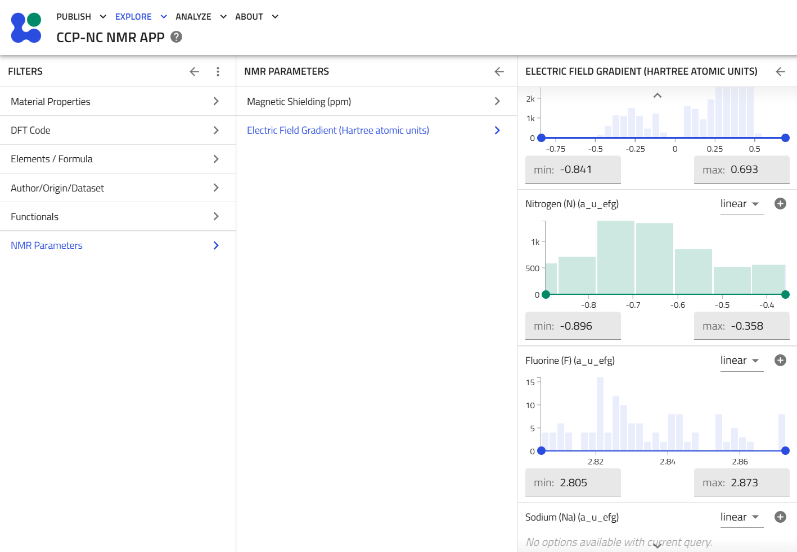
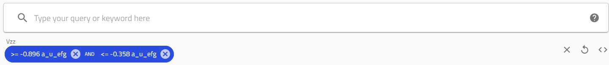
Vzz >= -0.896 AND <= -0.358 a_u_efg, matching the Nitrogen range selected above.Known Limitations¶
The CCP-NC Database provides multiple complementary search methods. Although most metadata can be searched using either the Filter Panels or the Global Search Bar, users should be aware of current limitations and recommended practices.
Equality versus Free-text Searches¶
For structured metadata, Equality searches generally provide the most reliable and predictable results.
Free-text searches should primarily be used when:
- searching long material names;
- searching partial publication DOIs; or
- deliberately searching for related external database reference codes.
Short Chemical Formulae¶
Free-text searches may produce unintended matches for short chemical formulae.
For example,
H4
may also match
H14
H24
and similar formulae containing the same sequence of characters.
Equality searches are therefore strongly recommended whenever the complete chemical formula is known.
Author Searches¶
Although both Equality and Free-text searches are available for author names, Equality searches generally provide more reliable and predictable results.
For most users, the Author filter panel remains the preferred search method.
Exchange-Correlation Functional Searches¶
Functionals such as PBE, RPBE and PBESOL share similar text.
To avoid unintended substring matches, Equality searches should always be used.
Numerical NMR Parameter Searches¶
Although magnetic shielding and electric field gradient quantities are indexed within the underlying search infrastructure, direct numerical range searching through the Global Search Bar is currently limited and not recommended.
Histogram-based filtering within the Filter Panel provides the recommended workflow for these searches.
Staging Deployment¶
The CCP-NC Database is under active development.
Additional search capabilities, interface improvements and expanded metadata support may be introduced in future releases.